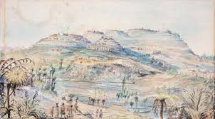
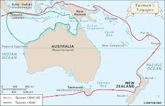
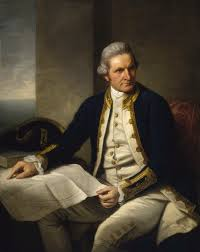
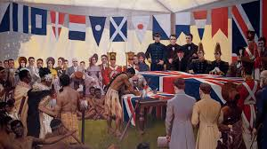
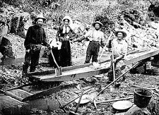
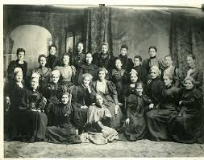
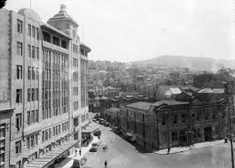
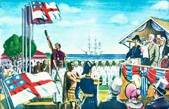

c. 1300s - Māori Settlement

Polynesian explorers arrived in Aotearoa by waka and established Māori communities. They developed unique cultures, traditions, and systems of leadership while adapting to the environment.
1642 - Abel Tasman's Arrival

Dutch explorer Abel Tasman became the first recorded European to reach New Zealand. His encounter with Māori was brief and led to New Zealand appearing on European maps.
1769 - James Cook Arrives

Captain James Cook mapped much of New Zealand's coastline. His voyages increased European knowledge of Aotearoa and began greater contact between Māori and Europeans.
1840 - Treaty of Waitangi

The Treaty of Waitangi was signed between many Māori chiefs and representatives of the British Crown. It became a foundational document in New Zealand's history.
1860s - New Zealand Gold Rush

Gold discoveries in Otago and the West Coast attracted thousands of miners. The gold rush helped grow towns, infrastructure, and New Zealand's economy.
1893 - Women's Suffrage

New Zealand became the first self-governing country in the world where women gained the right to vote in parliamentary elections.
1907 - New Zealand Becomes a Dominion

New Zealand gained greater independence from Britain and became a Dominion, an important step towards becoming a fully independent nation.
1947 - New Zealand Becomes Fully Independent

New Zealand adopted the Statute of Westminster, giving it full control over its own laws and government.